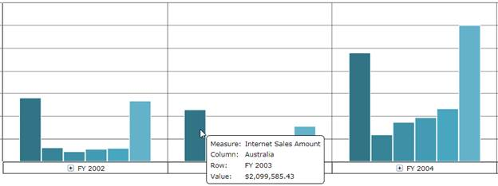
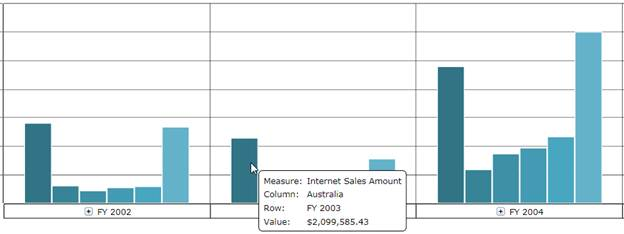

Essential BI OLAP Chart for Silverlight supports the Series ToolTip feature, which allows users to visualize the value of a DataPoint in an OlapChart Series.
Use Case Scenarios
ToolTips help users to understand the underlying data variations across Series.

Figure 53: A Simple OlapChart with Series ToolTip
Displaying a ToolTip in an OlapChart
The ToolTip in an OlapChart can be enabled or disabled by using the ShowSeriesToolTip property. By default, the Series ToolTip is enabled.
Enabling the Series ToolTip
To enable the Series ToolTip for an OlapChart control:
1. Add an instance of the OlapChart to an application with the ShowSeriesToolTip property set to “True”, as shown in the following code snippets.
|
[XAML]
<sfchart:OlapChart ShowSeriesToolTip="True"/>
|
|
[C#]
OlapChart olapChart1 = new OlapChart(); //// Enabling the Series ToolTip. this.olapChart1.ShowSeriesToolTip = true;
|
|
[VB]
Dim olapChart1 As OlapChart = New OlapChart() ' Enabling the Series ToolTip. Me.olapChart1.ShowSeriesToolTip = True
|
2. Create an OlapReport, as shown in the following code snippets.
|
[C#] private OlapReport SimpleDimensions() {
|
|
[VB]
Private Function SimpleDimensions() As OlapReport Dim olapReport As OlapReport = New OlapReport() olapReport.CurrentCubeName = "Adventure Works"
Dim dimensionElementColumn As DimensionElement = New DimensionElement()
' Specifying the Name of the Dimension. dimensionElementColumn.Name = "Customer"
dimensionElementColumn.HierarchyName = "Customer Geography"
dimensionElementColumn.AddLevel("Customer Geography", "Country")
Dim measureElementColumn As MeasureElements = New MeasureElements() measureElementColumn.Elements.Add(New MeasureElement With {.Name = "Internet Sales Amount"})
Dim dimensionElementRow As DimensionElement = New DimensionElement() ' Specifying the Name of the Dimension. dimensionElementRow.Name = "Date" dimensionElementRow.AddLevel("Fiscal", "Fiscal Year")
' Adding the MeasureElement. olapReport.CategoricalElements.Add(New Item With {.ElementValue = measureElementColumn})
' Adding the ColumnMembers. olapReport.CategoricalElements.Add(New Item With {.ElementValue = dimensionElementColumn})
' Adding the RowMembers. olapReport.SeriesElements.Add(New Item With {.ElementValue = dimensionElementRow})
Return olapReport End Function
|
3. Add the OlapReport to OlapDataManager, and bind the report to the OlapChart control, as shown in the following code snippets.
|
[C#]
this.olapDataManager.SetCurrentReport(SimpleDimensions());
|
|
[VB]
Me.olapDataManager.SetCurrentReport(SimpleDimensions()) Me.olapChart1.OlapDataManager = olapDataManager
|
The following screen shot shows a simple OlapChart with the Series ToolTip enabled:

Figure 54: A Simple OlapChart with Series ToolTip
Disabling the Series ToolTip
For disabling the Series ToolTip, you need to set the ShowSeriesToolTip property to “False”.
Sample Link
Chart Appearance Sample
To access a Chart Appearance sample:
1. Open the Syncfusion Dashboard.
2. Click Business Intelligence.
3. Click the Silverlight drop-down list, and then select Explore Samples.
4. Navigate to Syncfusion.OlapChart.Silverlight.Samples -> Syncfusion.OlapChart.Silverlight.Samples -> Samples -> AppearanceDemo.